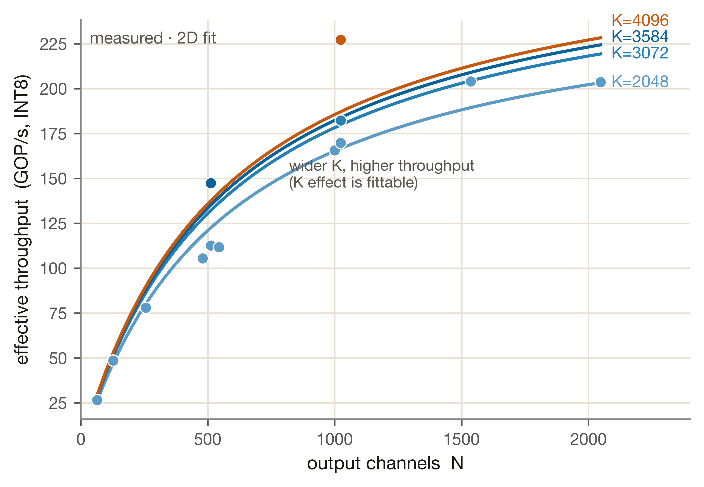
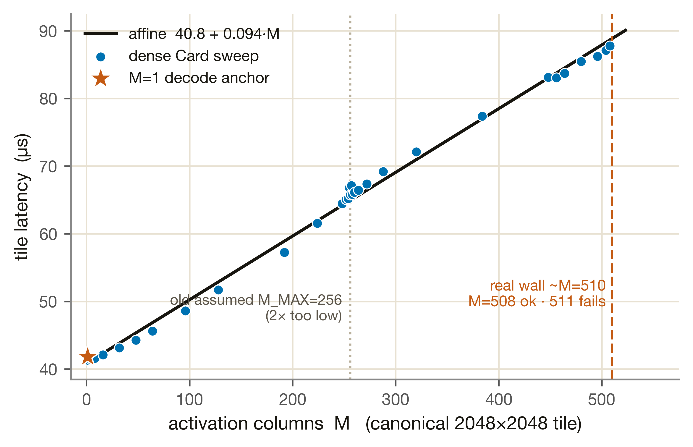
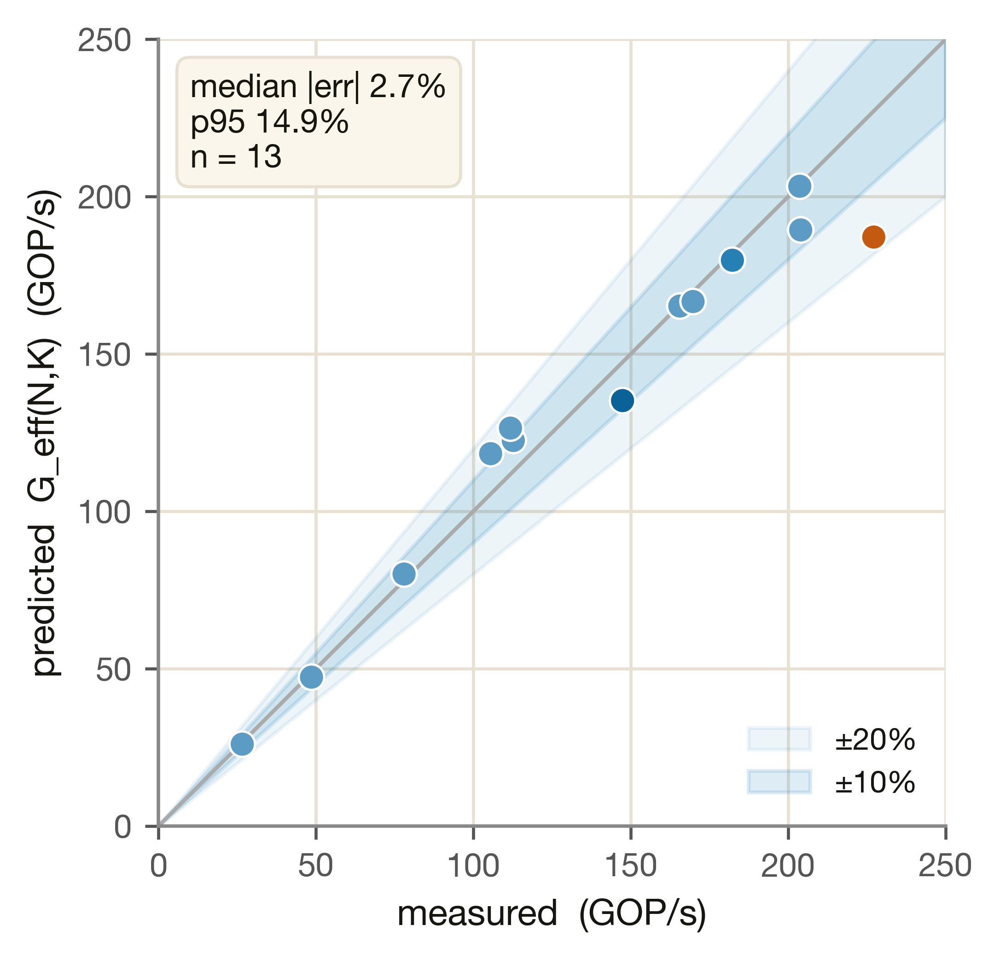
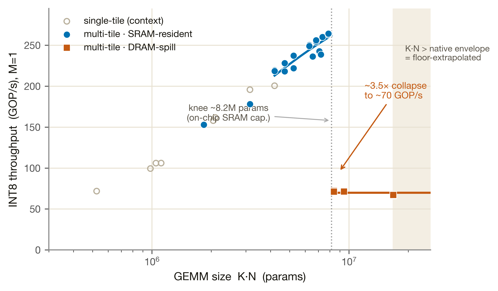

CIM 計算核
異構 SoC 的主角計算引擎——所有 weight-stationary GEMM（Q/K/V/O 投影、FFN gate/up/down、lm_head）都落在這裡。本頁整合 decode 校準、Card 重驗、prefill 攤銷與多-tile residency cliff 四層結果。
M1 模擬 CIM 計算核的兩個最基本算子，Phase 1 只把這兩件事的延遲算準，不碰排程或多單元競爭：
① GEMV（decode，M=1）——decode 每步只生一個 token，是 weight-stationary 的矩陣 × 向量。② GEMM（prefill，M>1）——prefill 一次吃一批 M 個 token，是矩陣 × 矩陣，weight 載入一次被 M 個 token 重用。模型裡所有 Q/K/V/O 投影、FFN gate/up/down、lm_head 都歸到這兩種。
硬體上 Metis AIPU 是 quad-core，每核一塊 512×512 INT8 數位 in-memory（D-IMC）crossbar（ISSCC 2024）。「weight-stationary」= 權重先寫進 crossbar 不動，activation 流過去做 MAC。吞吐以 INT8 GOP/s 計（不是 GFLOP/s）。M1 是少數量到真矽、且經 Card 重驗的單元，數字幾乎全部來自自己的板上量測。
量測協定：同一顆 800 MHz AIPU，先在 Aetina Metis Alpha（pre-production）以 run_metis_cim.py + axrunmodel dev_fps 量，再在量產 Metis Card（16 GiB on-card LPDDR4x）用 axcompile 編同一 1×1-conv matmul proxy 重驗。兩板同頻，GOP/s 可直接比、無需 clock 正規化。我們只量 M1 的兩個基本算子：
1a · GEMV（decode, M=1）：量「有效吞吐 G_eff」
decode 每步是一個 token 的矩陣×向量。量的標的是有效吞吐 G_eff——一個 (N, K) 形狀的 tile 實際達到的 INT8 GOP/s（N = 輸出通道數，K = contraction 維 / 輸入維）。在 Alpha 量 13 個原生單-tile 形狀（K∈{2048,3072,3584,4096}、N∈{64…2048}），Card 重驗同 13 形狀。下圖把這 13 點攤開：

1b · GEMM（prefill, M>1）：量「tile 延遲 vs M」
prefill 一次處理 M 個 token：weight 載入一次，被 M 個 activation column 重用。量的標的是一個 canonical 2048×2048 tile 在 M∈{2…508}（31 個 dense 點）的延遲——看「載入成本如何被 M 攤薄」。

GEMV（M=1）：G_eff 2D 閉合式
延遲式怎麼來：沿輸出維 N 切成 tile，每塊的工作量是 2·K·n_tile 個 INT8 op（係數 2 = 一次 MAC 算乘加兩個 op），除以該塊自己的有效吞吐 G_eff 得到時間，再加總。重點是「每塊按自己的寬度計費」——partial 的最後一塊不會被充整塊延遲。
每個參數的物理意義：
| 參數 | 值 | 物理意義 |
|---|---|---|
| Gmax | 333.67 | crossbar 飽和吞吐上限（GOP/s）：N、K 都大、利用率趨近 1 時的速率，≈ 4 核總 MAC 速率 |
| Na | 577.2 | N 半飽和常數：N=Na 時吞吐達 Gmax 的一半。Na 越小 = 小輸出寬度就能餵飽 crossbar |
| Kb | 574.1 | K 半飽和常數：對 contraction 深度同理；K=Kb 時達一半。解釋了「K 越深越有效率」 |
| n_cores · W | 4 · 2048 | 核數與有效輸出寬度 W=n_cores×512：一次能平行輸出的通道數上限 |

GEMM（M>1）：M-amortization 仿射擬合
weight 載入一次、被 M 個 activation column 重用，所以延遲對 M 是仿射（一條直線），其量測點與擬合線見上方 §1b 圖 M1·2。M=1 decode 是不同 regime、不在此擬合內（誤用 G_eff 把 decode 線性外推到大 M 會嚴重高估、達一至兩個數量級，仿射式消除這偏差）。每個參數的物理意義：
| 參數 | 值 | 物理意義 |
|---|---|---|
| a（weight load） | 40.8 µs | 截距：把 weight 寫進 crossbar 的固定成本，與 M 無關 |
| b（per activation col） | 0.094 µs/col | 斜率：每多算一個 token 的邊際成本。b 很小 = load 攤開後每 token 幾乎免費（prefill 划算的原因） |
| asymptote | 89.2 TOPS | M→∞ 的等效算力：weight load 完全攤掉後的純計算上限 |
| decode anchor（M=1） | 41.83 µs · 200.5 GOP/s | M=1 量測錨點：確認仿射律外推回 M=1 與 decode regime 橋接得上 |
M1 不掛任何 heavy-sim 引擎（decode 完全 memory-bound，compute ceiling 不需建模，issue #16）。本節的「模擬」= 解析外推到量測 envelope 之外，由 Card-native 多-tile 量測校準的 residency-cliff 模型支撐。
axcompile 不只能編單一 2048×2048 tile。Phase 1.5 直接在 Card native 編到 K·N≈17M。M=1 吞吐隨 K·N 平滑上升直到 knee≈8.2M params（權重 resident 於 on-chip SRAM），越過後 崩落 ~3.5× 到 ~70 GOP/s 的 DRAM-spill floor。真實 decode FFN/lm_head GEMV（K·N≥16M）正落在 spill regime——舊 tile-sum 低估約 3×，新 cliff 模型修正後 per-op M1 延遲對 Phase 2 才正確。| 參數 | 值 | 物理意義 |
|---|---|---|
| knee（轉折點） | 8.2 M params | 權重總量超過此值就塞不進 on-chip SRAM、開始溢出到 DRAM。≈ on-chip SRAM 的權重容量，物理清晰 |
| spill floor | 70 GOP/s | 溢出後吞吐被 DRAM 頻寬鎖死的地板值（~M2 的有效 BW），不再隨 K·N 變化 |
| native envelope | 17 M | Card 上 axcompile 能原生編譯的 K·N 上限；超過此值的點是沿 spill floor 線性外推（低風險） |

| 指標 | 值 | 門檻 | 結果 |
|---|---|---|---|
| median rel_err | 2.7% | ≤ 10% | ✅ PASS |
| p95 rel_err | 14.9% | ≤ 20% | ✅ PASS |
| max rel_err | 17.6% | — | 呈現不隱藏 |
| 指標 | 值 | 容差 | 結果 |
|---|---|---|---|
| median |rel_diff| | 4.8% | ≤ 10% | ✅ PASS |
| p95 |rel_diff| | 9.7% | ≤ 20% | ✅ PASS |
Alpha 的 G_eff(N,K) 因此 Card-confirmed，凍結解除（決策：保留 Alpha 擬合）。Card 系統性略低於 Alpha（12/13 點），小-N 差較大、大-N 收斂——跨 SDK 版本小偏移，在容差內。
| 項目 | fit max | hold-out median | 範圍 |
|---|---|---|---|
| prefill 仿射 | 3.1% | 0.9% | M∈{2…508} |
| 多-tile cliff（新） | 12.5% | 3.3% | K·N ≤ 17M |
| 多-tile（舊 tile-sum，對照） | 100% | median 31% | 已汰換 |
| 項目 | 狀態 |
|---|---|
M=1 decode dev_lat_us(K,N) 介面 | ✅ 凍結，calibrated |
M>1 prefill dev_lat_us(M,K,N)（dense M∈{2…508}） | ✅ 凍結，calibrated（hold-out 0.9%） |
| prefill M > 508 | ⚠ 外推（真牆 ~M=510；M=511 fail） |
| 多-tile residency cliff（K·N ≤ 17M） | ✅ calibrated（Card-native） |
| 多-tile K·N > 17M（spill floor） | ⚠ 外推（memory-bound 線性，低風險） |
| Card-revalidated，凍結解除 | ✅ CARD_REVALIDATED |
CimTileModel + params/m1_cim.json | ✅ 模組化，Phase 2 直接調用 |
edge topology noc_efficiency=0.9 | ⚠ assumption，待 edge silicon 校準 |
無 blocking gap：M1 介面穩定，Phase 1 端到端 recompose 已在 M1 calibrated decode 路徑上通過 8B hold-out（9.5%）。Phase 2 仍需：prefill 端到端 TTFT 驗證、edge noc_efficiency 校準、多-tile spill 的 M>1 行為（cliff 主要在 M=1 量）。
- decode G_eff 門檻：
validation/reports/phase1.1/m1.json › throughput_fit_gate_native - Card 重驗：
validation/reports/phase1.2/cim_card_revalidate.json › status, consistency - prefill 仿射：
validation/reports/phase1.2/cim_prefill_fit.json › affine_fit_tile_lat_us - 多-tile cliff：
validation/reports/phase1.5/cim_multitile.json › model, old_vs_new, resident_holdout - KV-append SPIKE：
validation/reports/phase1.5/kv_append_spike.json › verdict - 擬合參數 / 架構：
simulator/models/params/m1_cim.json；contractvalidation/contracts/m1.yaml - 原始量測：
measurements/aetina/metis_alpha_matmul.json、measurements/metis_card/cim_card_revalidate_raw.json - recompose hold-out：
validation/reports/phase1.1/recompose.json › rel_error_8b